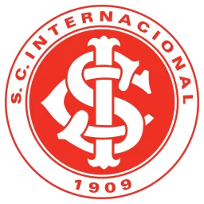
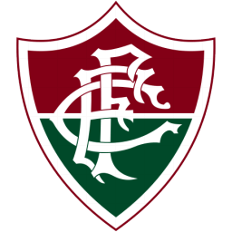

Palmeiras
Localização: São Paulo, SP
Estádio: Allianz Parque
Curiosidade: O Palmeiras se destaca como um dos únicos dois times brasileiros a fornecer jogadores para a Seleção Brasileira em todas as cinco Copas do Mundo conquistadas pelo Brasil.
Internacional
Localização: Porto Alegre, RS
Estádio: Beira-Rio
Curiosidade: O clube foi nomeado Internacional inspirado na missão de acolher representantes de diferentes nacionalidades no time.
Fluminense
Localização: Rio de Janeiro, RJ
Estádio: Maracanã
Curiosidade: primeira ideia era batizar o Flu como Rio Football club, mas o nome escolhido acabou sendo mesmo Fluminense. ”Flumen” significa “rio” em latim.
Corinthians

Localização: São Paulo, SP
Estádio: Arena Corinthians
Curiosidade: O mascote do Corinthians foi criado em 1929. A origem do nome vem do jornalista Thomaz Mazzoni, do impresso A Gazeta